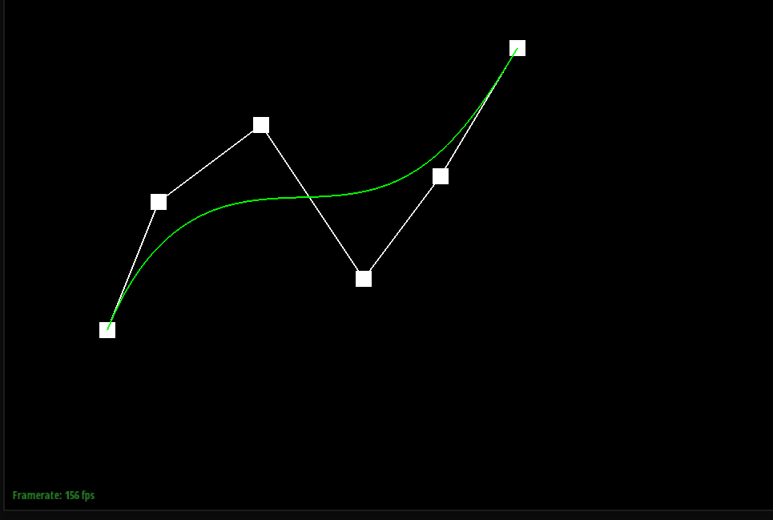
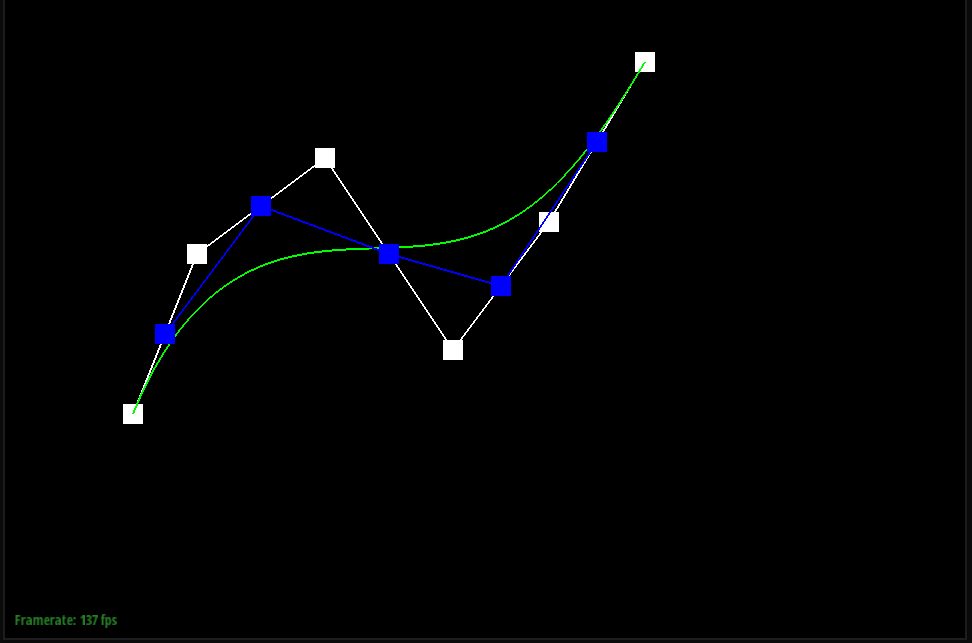
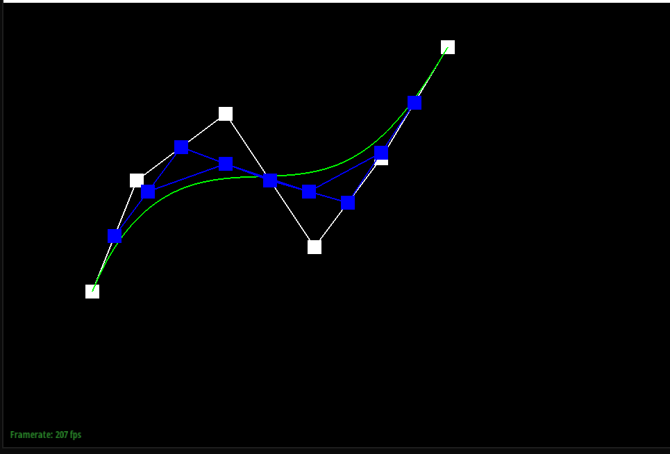
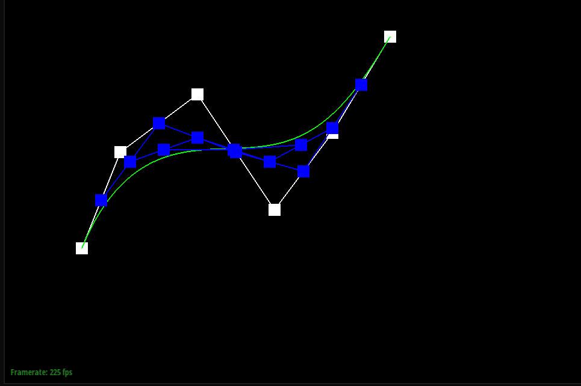
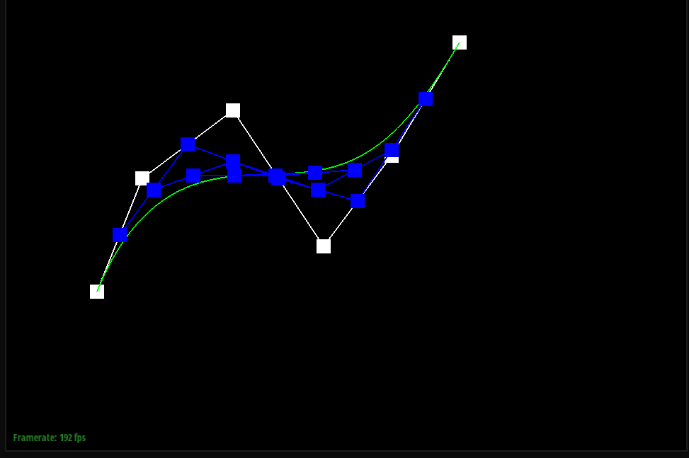
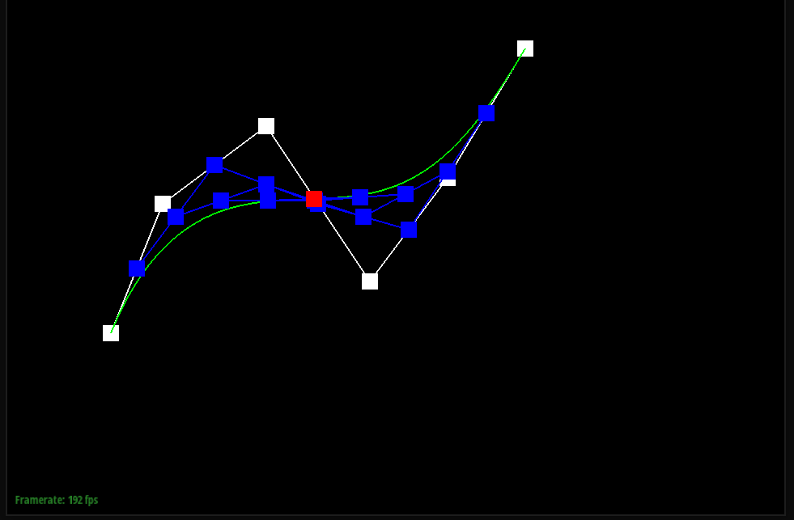
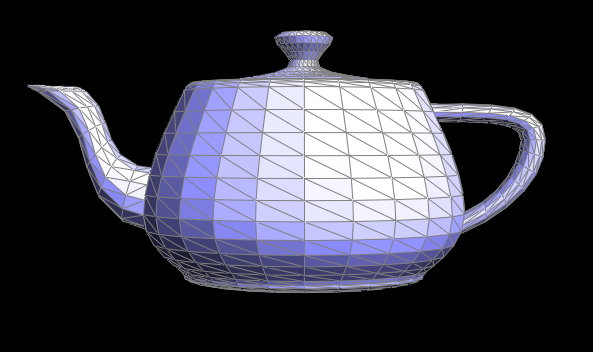

Overview
Give a high-level overview of what you implemented in this project. Think about what you've built as a whole. Share your thoughts on what interesting things you've learned from completing the project.
Section I: Bezier Curves and Surfaces
Part 1: Bezier curves with 1D de Casteljau subdivision
Casteljau’s algorithm is a recursive way to draw a curve using linear interpolation. When given n control points and the parameter t , we can compute the n - 1 intermediate control point at t using linear interpolation. Basically, we run this recursively and will get a point that lies on the Bezier curve at the given t parameter since the trajectory of the curve is dependent on the variable t . To compute this we created a for loop where we iterate through all the points and everytime we do we add a new point to our new point vector2D, the new point is founded by (1 - t ) * current point + t * next point. Then we return the 2Dvector of new points.
Bezier curve: 6 Original Control Points
|

|

|

|
|

|

|

|
Part 2: Bezier surfaces with separable 1D de Casteljau subdivision
Along the Bazier surface it is just a bunch of Bezier curves in a grid formation. So since a Bazier surface is just made up of Bezier curves in order to evaluate the Bezier surfaces we basically ran the Casteljau algorithm twice. First you implantment it on each row where you reduce each row to a single point so then we get a vector of all those points and then we for loop through it again and use casteljau to then get a singular point.
Section II: Sampling
Part 3: Average normals for half-edge meshes
To implement the area-weighted vertex normals we returned an approximate unit normal of the vertex. In order to do that we normalize the area-weighted average of the normals of the neighboring triangles. We implemented this with mainly a while loop and some simple arithmetic. To make sure we did not get duplicate faces in our normals, we used an if statement in the for loop to make sure we only add the twin to our normal count if the FaceCIter was not equal to the HalfedgeIter face.

|

|